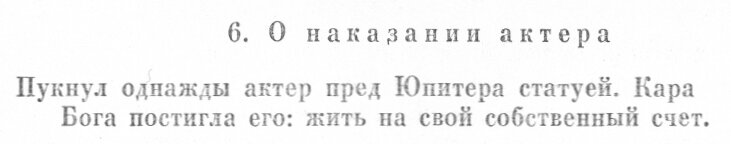

«АиФ»: - На какие средства сейчас живёт протестное движение?
Д.Г.: - Мы в координационном совете оппозиции скидываемся по 5 тыс. руб. в месяц - на аренду комнаты для заседаний. Денег у оппозиции вообще нет. Весь бизнес моих родственников, который создавался 20 лет, уничтожен. Лично я живу на зарплату - чуть больше 140 тыс. руб. Половина уходит на кредиты.
Виталий Цепляев "Кто предатель?" "Аргументы и факты" 3.04.2013
